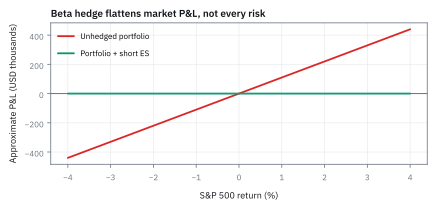
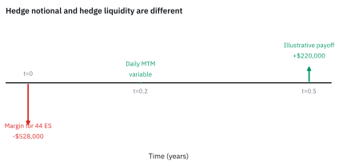

19.3 Hedging with ES Futures
พอร์ตที่ beta ไม่เท่าหนึ่งขยับไม่เท่ามูลค่าของมัน จำนวนสัญญาจึงต้องมาจาก beta คูณมูลค่า แล้วยังต้องวัดสิ่งที่ hedge ไม่ได้และเงินสดที่ต้องเตรียม
พอร์ตหุ้นมูลค่า \$10 ล้าน มี beta 1.10 ผู้จัดการอยากปิดความเสี่ยงตลาดหนึ่งสัปดาห์โดยไม่ขายหุ้นสักตัว ES อยู่ที่ 5,000 จุด จุดละ \$50 เพื่อนคิดว่า \$10 ล้านหารด้วยมูลค่าสัญญา \$250,000 ได้ 40 สัญญา ถ้าขาย 40 สัญญาแล้วตลาดลง 2% จะเหลือกำไรขาดทุนเท่าไร และที่ถูกควรขายกี่สัญญา?
ลองตอบก่อนเปิดเฉลย
40 สัญญาเหลือขาดทุน \$20,000: หุ้นเสีย $1.10\times10{,}000{,}000\times0.02=\$220{,}000$ แต่ ES ได้แค่ \$200,000 ที่ถูกคือ 44 สัญญา เพราะพอร์ตขยับเหมือนถือดัชนีมูลค่า \$11 ล้าน ขาย 44 สัญญาแล้ววัน −2% กำไรขาดทุนจากตลาดเป็นศูนย์ในแบบจำลอง แต่ถ้า beta จริงเป็น 1.30 ยังขาดทุน \$40,000 ความเสี่ยงเฉพาะตัวของหุ้นยังเหลือราว \$133,000 ต่อสัปดาห์ และต้องวางเงินประกันราว \$528,000
สิ่งที่เราจะสร้าง
19.2 ขั้นที่ 7 บอกว่าก้อนความเสี่ยงที่ขนาดสัญญาแก้ได้จะหายเมื่อ $NM=-Q$ โดย $Q$ คือเงินที่ของเราขยับต่อหนึ่งจุดของดัชนี พอร์ตหุ้นจริงไม่ได้ขยับเท่ามูลค่าของมัน มันขยับมากหรือน้อยกว่าตาม beta ของ 15.2 หน้านี้แปลง beta เป็นจำนวนสัญญา ES
เริ่มจากลองสองคำตอบด้วยมือ สร้างสูตรจำนวนสัญญา ปัดเป็นจำนวนเต็มด้วยสัญญาเล็ก หาว่าทำไม beta คือขนาดที่ทำให้ความผันผวนต่ำสุด และความเสี่ยงที่เหลือเป็นเงินเท่าไรต่อสัปดาห์ แล้วดูสามเรื่องที่โต๊ะเจอจริง: beta ที่เก่าแล้ว การปรับ beta ไปค่าที่ไม่ใช่ศูนย์ และเงินประกันที่ต้องเตรียม
ศัพท์ที่ใช้ในหัวข้อนี้
- Beta
- slope ของ regression ผลตอบแทนพอร์ตบนผลตอบแทนตลาด (15.2) บอกว่าตลาดขยับ 1% พอร์ตขยับกี่เปอร์เซ็นต์โดยเฉลี่ย ใช้แปลงพอร์ตให้เป็นมูลค่าดัชนีที่ขยับเท่ากัน
- Dollar beta
- beta คูณมูลค่าพอร์ต คือมูลค่าดัชนีที่ขยับเท่ากับพอร์ตเมื่อตลาดขยับ เป็นก้อนเดียวที่ futures บนดัชนีชดเชยได้
- Notional ของสัญญา
- ราคา futures คูณตัวคูณ คือมูลค่าดัชนีที่สัญญาหนึ่งฉบับคุม ES ที่ 5,000 จุดคือ \$250,000 ต่อสัญญา ใช้เป็นตัวหารตอนนับจำนวนสัญญา
- Hedge ratio
- ขนาดของ futures ต่อขนาดของพอร์ต เขียนเป็นสัดส่วนมูลค่าหรือจำนวนสัญญาก็ได้ ติดลบหมายถึงขาย futures
- Minimum-variance hedge
- hedge ratio ที่ทำให้ variance ของพอร์ตหลัง hedge ต่ำที่สุด หาได้ด้วยการหาอนุพันธ์แล้วตั้งเป็นศูนย์ ได้ค่าเท่ากับ slope ของ regression
- Residual risk
- ความผันผวนที่เหลือหลัง hedge มาจากส่วนของหุ้นที่ไม่เดินตามดัชนี futures บนดัชนีลบส่วนนี้ไม่ได้ ต้องวัดและบอกเจ้าของเงินล่วงหน้า
- MES (Micro E-mini S&P 500)
- สัญญาขนาดหนึ่งในสิบของ ES จุดละ \$5 ใช้เติมเศษที่ ES ทั้งฉบับหยาบเกินไป
สัญลักษณ์และหน่วย
| สัญลักษณ์ | ความหมาย | หน่วย |
|---|---|---|
| $V$ | มูลค่าพอร์ตหุ้น | \$ |
| $\beta,\ \beta^{*}$ | beta ของพอร์ต และ beta ที่ต้องการหลัง hedge | ไม่มีหน่วย |
| $F,\ M$ | ราคา ES และตัวคูณ | จุด, \$ ต่อจุด |
| $N,\ N^{*}$ | จำนวนสัญญา (ติดลบคือขาย) และจำนวนที่ปิดความเสี่ยงตลาดพอดี | สัญญา |
| $E_M$ | dollar beta $\beta V$ | \$ |
| $r_P,\ r_M,\ r_F$ | ผลตอบแทนของพอร์ต ของตลาด และของ futures ในช่วงเดียวกัน | สัดส่วนต่อช่วง |
| $\alpha,\ \varepsilon$ | ผลตอบแทนส่วนเกิน และส่วนเฉพาะตัวของหุ้น | สัดส่วนต่อช่วง |
| $h$ | notional ของ futures ต่อมูลค่าพอร์ต | ไม่มีหน่วย |
| $\sigma_P,\ \sigma_F,\ \sigma_H,\ \rho$ | ความผันผวนของพอร์ต ของ futures ของพอร์ตหลัง hedge และ correlation ระหว่างพอร์ตกับ futures | ต่อปี, ไม่มีหน่วย |
| $s_P,\ s_H$ | SD ของกำไรขาดทุนหนึ่งสัปดาห์ ก่อนและหลัง hedge | \$ |
ขั้นที่ 1 — ลองด้วยมือ: 40 สัญญากับ 44 สัญญาในวันที่ตลาดลง 2%
โจทย์ให้อะไรมาบ้าง: $V=\$10{,}000{,}000$, $\beta=1.10$, ES ที่ $F=5{,}000$ จุด จุดละ $M=\$50$ ตลาดลง $r_M=-2\%$ ขั้นนี้ใช้ beta เป็นความไวเฉลี่ย ยังไม่นับส่วนเฉพาะตัวของหุ้น ES ขยับเป็นเปอร์เซ็นต์เท่ากับดัชนี จึงลง 100 จุด
ES ลง 100 จุด ขายไว้หนึ่งสัญญาได้ $100\times\$50=\$5{,}000$ ขาย 40 สัญญาได้ \$200,000 แต่พอร์ตที่ beta 1.10 ลง 2.2% คือ \$220,000 เพื่อน hedge ดัชนีมูลค่า \$10 ล้าน ทั้งที่พอร์ตทำตัวเหมือนถือดัชนีมูลค่า \$11 ล้าน ส่วนที่ขาดไป \$1 ล้านของดัชนีคือที่มาของ \$20,000
คำตอบ: ขาย 40 สัญญาเหลือขาดทุน \$20,000 ขาย 44 สัญญาเหลือศูนย์
ตรวจเองใน 10 วินาที: วันนี้ต่อสัญญาได้ \$5,000 พอร์ตเสีย \$220,000 ต้องใช้ $220{,}000/5{,}000=44$ สัญญา
ขั้นที่ 2 — จาก beta เป็นเงินที่ขยับตามตลาด
ขั้นที่ 1 ใช้ $\beta V r_M$ เป็นการขยับของพอร์ตโดยไม่ได้บอกว่ามาจากไหน มันมาจาก regression ของ 15.2 ที่แยกผลตอบแทนพอร์ตเป็นสามก้อน คูณด้วยมูลค่าพอร์ตแล้วดูว่าก้อนไหนผูกกับตลาด
ในสามก้อนนี้ มีแค่ก้อนกลางที่ขยับตามตลาด เงินที่คูณ $r_M$ อยู่คือ dollar beta $E_M$ พอร์ต \$10 ล้านที่ beta 1.10 จึงเหมือนถือดัชนี \$11 ล้าน futures บนดัชนีแตะได้แค่ก้อนนี้
ก้อน $V\alpha$ คือฝีมือเลือกหุ้นของผู้จัดการ ซึ่งเป็นเหตุผลที่ไม่อยากขายหุ้นตั้งแต่แรก ก้อน $V\varepsilon$ คือข่าวเฉพาะบริษัท ไม่เดินตามดัชนี จึงยังอยู่หลัง hedge ขั้นที่ 5 และ 6 วัดว่ามันใหญ่แค่ไหน
ขั้นที่ 3 — แก้หาจำนวนสัญญา
ต้องการให้ก้อนตลาดของพอร์ตรวมหายไป ไม่ว่าตลาดจะขยับเท่าไร ขา futures ให้ $NMF\,r_F$ และเราใช้ $r_F=r_M$ ได้ เพราะ $F=Se^{(r-q)\tau}$ ตาม 19.1 ในหนึ่งวันส่วนที่ต่างคือดอกเบี้ยลบปันผลของวันเดียว ราว $0.05/252=0.02\%$ ซึ่งเล็กมากเทียบกับการขยับของตลาด
ดึง $r_M$ ออกมาเป็นตัวร่วมได้เพราะสองขาขยับตามตลาดตัวเดียวกัน ถ้าจะให้ $\Delta\Pi$ เป็นศูนย์ทุกค่าของ $r_M$ วงเล็บต้องเป็นศูนย์ เครื่องหมายลบแปลว่าขาย ตัวหารใช้ราคา futures ไม่ใช่ดัชนี เพราะเงินของสัญญาคือ $\Delta F$ คูณ $M$ นี่คือเงื่อนไข $NM=-Q$ ของ 19.2 ขั้นที่ 7 โดย $Q=\beta V/F=\$2{,}200$ ต่อจุด
Figure 19.3a — กำไรขาดทุนก่อนและหลังขาย ES 44 สัญญา

แกนนอนคือผลตอบแทนของ S&P 500 จาก −4% ถึง +4% (81 จุด) แกนตั้งคือกำไรขาดทุนเป็นพันดอลลาร์ เส้นแดงคือพอร์ตที่ไม่ hedge $11{,}000{,}000\,r_M$ ไปถึง ±440 เส้นเขียวคือพอร์ตบวกการขาย ES 44 สัญญา ซึ่งเป็นศูนย์ทุกจุดพอดี เพราะรูปใช้แบบจำลองเดียวกับขั้นที่ 3 ที่ไม่มีก้อน $\varepsilon$ และ beta คงที่ ของจริงเส้นเขียวแกว่งรอบศูนย์ด้วยขนาดของขั้นที่ 6
ขั้นที่ 4 — ปัดเป็นจำนวนเต็ม และเติมเศษด้วย MES
44 ในตัวอย่างเป็นจำนวนเต็มพอดีเพราะโชค ถ้า beta เป็น 1.13 จะได้เศษ แต่ ES ซื้อขายได้ทีละทั้งสัญญา ต้องตัดสินใจว่าจะทิ้งเศษไว้เท่าไร และจะใช้ MES ซึ่งเป็นหนึ่งในสิบของ ES (จุดละ \$5 มูลค่า $5{,}000\times5=\$25{,}000$ ต่อสัญญา) เติมหรือไม่
ขาย 45 สัญญาเหลือ dollar beta \$50,000 ที่ไม่ได้ hedge วันที่ตลาดลง 2% เสีย \$1,000 เศษนี้เป็นแค่ 0.44% ของ \$11.3 ล้าน สำหรับพอร์ตใหญ่จึงมักปล่อยไว้ ถ้าอยากปิดให้หมด ขาย MES เพิ่มสองสัญญา
พอร์ตเล็กเจ็บกว่า พอร์ต \$300,000 ที่ beta 1.0 ต้องขาย 1.2 สัญญา ขายหนึ่งสัญญาเหลือ \$50,000 หรือ 16.7% ของความเสี่ยงตลาด MES มีไว้สำหรับกรณีแบบนี้
Figure 19.3b — exposure ที่เหลือเมื่อขายจำนวนสัญญาต่าง ๆ

แท่งคือ exposure ที่เหลือ $11{,}000{,}000-n\times250{,}000$ เป็นพันดอลลาร์ เมื่อขาย $n$ ตั้งแต่ 35 ถึง 52 สัญญา ขายน้อยไปเหลือบวก (ยังเสียเมื่อตลาดลง) ขายมากไปเหลือลบ (กลายเป็นพนันว่าตลาดลง) แต่ละสัญญาเปลี่ยน \$250,000 แท่งเขียวคือ 44 ที่เป็นศูนย์พอดี ชื่อรูปพูดถึงเศษจากการปัด แต่ในตัวอย่างนี้ 44 เป็นจำนวนเต็มจึงไม่มีเศษ เศษจะเกิดเมื่อ beta เป็นค่าอย่าง 1.13 ในขั้นที่ 4
ขั้นที่ 5 — ทำไม beta คือขนาดที่ดีที่สุด และเหลือความเสี่ยงเท่าไร
ขั้นที่ 3 ตั้งให้ก้อนตลาดหายไปโดยไม่สนก้อน $\varepsilon$ คำถามที่ควรถามคือ ถ้ามอง variance ทั้งก้อน ขนาดที่ดีที่สุดยังเป็นอันเดิมไหม ให้ $h$ เป็น notional ของ futures ต่อมูลค่าพอร์ต แล้วหา $h$ ที่ทำให้ variance ของผลตอบแทนหลัง hedge ต่ำสุด ตัวเลขสมมติ: พอร์ตผันผวน 22% ต่อปี futures 18% ต่อปี correlation 0.90
บรรทัดที่สองคือ variance ของผลรวมสองก้อน โดย covariance คือ $\rho\sigma_P\sigma_F$ มันเป็นพาราโบลาหงายใน $h$ เพราะสัมประสิทธิ์ของ $h^2$ เป็นบวก จุดที่อนุพันธ์เป็นศูนย์จึงเป็นจุดต่ำสุด คำตอบ $h^*=-\text{Cov}/\sigma_F^2$ คือ slope ของ regression ของผลตอบแทนพอร์ตบนผลตอบแทน futures (8.7 และ 15.1) ติดลบเพราะต้องขาย
ตัวเลขนี้เลือกให้ $h^*=-1.10$ ตรงกับ beta ของโจทย์ แปลงเป็นสัญญาได้ $-1.10\times10{,}000{,}000/250{,}000=-44$ เท่าขั้นที่ 3 แทน $h^*$ กลับเข้าไป สองก้อนหลังรวมกันเหลือ $-\rho^2\sigma_P^2$ variance ที่เหลือจึงเป็น $1-\rho^2=19\%$ ของเดิม ความผันผวนลดจาก 22% เหลือ 9.59% ต่อปี ไม่ใช่ศูนย์
ขั้นที่ 6 — ความเสี่ยงที่เหลือเป็นเงินต่อสัปดาห์
โจทย์ให้อะไรมาบ้าง: พอร์ต \$10 ล้าน ความผันผวน 22% ต่อปีก่อน hedge และ 9.59% ต่อปีหลัง hedge (ขั้นที่ 5) ผู้จัดการถือ hedge หนึ่งสัปดาห์ ปีหนึ่งมี 52 สัปดาห์ และสมมติว่าผลตอบแทนแต่ละสัปดาห์ไม่ขึ้นต่อกัน variance จึงบวกกันตามจำนวนสัปดาห์ SD ของหนึ่งสัปดาห์คือ SD ต่อปีหารด้วย $\sqrt{52}$
คำตอบ: SD ของกำไรขาดทุนหนึ่งสัปดาห์ลดจาก \$305,085 เหลือ \$132,984 สัปดาห์ที่แย่หนึ่ง SD ยังเสียราว \$133,000 ทั้งที่ “hedge แล้ว” ก้อนนี้คือหุ้นที่ผู้จัดการเลือกเอง และเป็นก้อนที่ตั้งใจเก็บไว้
ตรวจเองใน 10 วินาที: $\sqrt{52}\approx7.2$ และ $22\%/7.2\approx3.05\%$ ของ \$10 ล้านคือราว \$305,000 คูณ 0.436 ได้ราว \$133,000
ขั้นที่ 7 — beta เก่า: hedge ที่เคยพอดีกลายเป็นไม่พอดี
beta 1.10 ประมาณจากข้อมูลย้อนหลัง (15.1, 15.2) ถ้าสัปดาห์นี้พอร์ตทำตัวเหมือน beta 1.30 เพราะหุ้นในพอร์ตเปลี่ยน น้ำหนักเปลี่ยน หรือตลาดเข้าช่วงผันผวน การขาย 44 สัญญาจะเหลืออะไรไว้
พอร์ตตอนนี้ทำตัวเหมือนดัชนี \$13 ล้าน แต่ขายไว้แค่ \$11 ล้าน เหลือ \$2 ล้านที่ไม่ได้ hedge วัน −2% เสีย \$40,000 สูตรจำนวนสัญญาไม่ผิด แต่ใส่ beta ผิด โต๊ะจึงประมาณ beta ใหม่และปรับ hedge ตามรอบที่กำหนดไว้ ไม่ไล่ปรับทุกครั้งที่ราคาขยับ เพราะค่าซื้อขายและเงินประกันกลายเป็นความเสี่ยงใหม่
Figure 19.3c — exposure ที่เหลือเมื่อ beta จริงไม่ใช่ 1.10

แกนนอนคือ beta จริง 0.7 ถึง 1.5 แกนตั้งคือ exposure ที่เหลือเมื่อยังขาย 44 สัญญา $\beta\times10{,}000{,}000-11{,}000{,}000$ เป็นพันดอลลาร์ จาก −4,000 ถึง +4,000 เส้นประคือ beta 1.10 ที่ใช้ตั้ง hedge ที่ beta 1.30 เหลือ +2,000 คือ \$2 ล้าน หรือ −\$40,000 ในวัน −2% ของขั้นที่ 7 beta จริงต่ำกว่าที่คิดก็เสี่ยงเหมือนกัน แค่กลับทิศ: พอร์ตกลายเป็นพนันว่าตลาดลง
ขั้นที่ 8 — ไม่จำเป็นต้องลดเป็นศูนย์: ปรับ beta ไปค่าที่ต้องการ
บ่อยครั้งผู้จัดการไม่ได้อยากปิดความเสี่ยงตลาดทั้งหมด แค่อยากลดลงก่อนเหตุการณ์ใหญ่ หรืออยากเพิ่มโดยยังไม่ซื้อหุ้น ใช้เหตุผลเดิมของขั้นที่ 3 แต่ตั้งให้ dollar beta รวมเท่ากับ $\beta^{*}V$ แทนศูนย์
ตั้ง $\beta^{*}=0$ ก็กลับไปได้ขั้นที่ 3 พอดี ลด beta จาก 1.10 เหลือ 0.5 ขาย 24 สัญญา เพิ่มเป็น 1.5 ซื้อ 16 สัญญา กรณีหลังใช้บ่อยเมื่อกองทุนได้เงินใหม่เข้ามาแต่ยังเลือกหุ้นไม่เสร็จ ซื้อ futures ไว้ก่อนเพื่อไม่ให้เงินสดตกรถเมื่อตลาดขึ้น
ขั้นที่ 9 — เงินประกันและเงินสดของ hedge
โจทย์ให้อะไรมาบ้าง: ขาย ES 44 สัญญา เงินประกันสัญญาละ \$12,000 ตามตัวเลขสมมติของ 19.2 แล้วตลาดขึ้น 5% ในช่วงที่ถือ hedge
notional \$11 ล้านไม่ต้องจ่าย แต่ต้องวางเงินประกัน \$528,000 ตั้งแต่วันแรก ถ้าตลาดขึ้น 5% ขา ES เสียเงินสด \$550,000 ทีละวันตามกลไกของ 19.2 มากกว่าเงินประกันทั้งก้อน ขณะที่หุ้นได้ \$550,000 บนกระดาษ ขายหุ้นมาจ่ายก็ได้ แต่นั่นคือสิ่งที่ hedge ตั้งใจไม่ทำตั้งแต่แรก
คำตอบ: ต้องเตรียมเงินประกัน \$528,000 และเงินสดหรือวงเงินที่รับเงินรายวันได้ถึงราว \$550,000 ถ้าตลาดขึ้น 5%
ตรวจเองใน 10 วินาที: 5% ของ 5,000 คือ 250 จุด $250\times50=\$12{,}500$ ต่อสัญญา คูณ 44 ได้ \$550,000
Figure 19.3d — notional ของ hedge กับเงินสดของ hedge

ลูกศรแรกคือเงินประกัน \$528,000 ที่ต้องวางวันแรก (44 สัญญา สัญญาละ \$12,000) ลูกศรกลางติดป้ายว่าเงินรายวันแปรผัน แต่ถูกวาดด้วยความยาวศูนย์ จึงเห็นแค่ป้าย ลูกศรสุดท้ายคือ +\$220,000 ที่ ES ได้ในวันที่ตลาดลง 2% ของขั้นที่ 1 เป็นหนึ่งกรณีตัวอย่าง ไม่ใช่เงินที่รู้ล่วงหน้า ถ้าตลาดขึ้น ลูกศรนี้กลับทิศ และวันขึ้น 5% ของขั้นที่ 9 คือเงินออก \$550,000 แกนนอนเป็นเวลาที่รูปตั้งเอง ไม่ได้แทนวันจริง
คำถามที่ควรถามออกมาดัง ๆ
ทำไมไม่ขายหุ้นไปเลย? ขายหุ้น \$10 ล้านต้องจ่ายค่าคอมมิชชัน ส่วนต่างราคาซื้อขายของหุ้นหลายสิบตัว อาจมีภาษี และเสียก้อน $V\alpha$ ที่ผู้จัดการตั้งใจถือ ขาย ES 44 สัญญาเป็นคำสั่งเดียว และพอร์ตที่ hedge แล้วยังได้ดอกเบี้ยเงินสดโดยประมาณตาม cash-and-carry ของ 19.1 บวก $\alpha$ และ $\varepsilon$
ใช้ราคาดัชนีหรือราคา futures เป็นตัวหาร? ราคา futures เพราะเงินที่สัญญาจ่ายคือ $\Delta F\times M$ ถ้า ES อยู่ที่ 5,126.58 ขณะที่ดัชนีอยู่ที่ 5,000 ตัวหารที่ถูกคือ $5{,}126.58\times50$
hedge หนึ่งสัปดาห์แต่ ES หมดอายุอีกสามเดือน มีปัญหาไหม? ไม่มี ซื้อคืนก่อนหมดอายุได้เสมอ ถ้าต้อง hedge นานกว่าอายุสัญญา ต้องย้ายไปสัญญารุ่นถัดไป (roll) และจ่ายส่วนต่างราคาของสองรุ่น ซึ่งเป็นต้นทุนการถือของ 19.1
ความผิดที่ให้คำตอบผิดแบบเงียบ ๆ
ลืม beta: ขาย 40 สัญญาตามมูลค่าพอร์ต วัน −2% ยังเสีย \$20,000
ใช้ beta เก่า: beta จริง 1.30 แต่ขาย 44 สัญญา เหลือ \$2 ล้านที่ไม่ได้ hedge วัน −2% เสีย \$40,000
ขายมากเกินไป: ขาย 50 สัญญาเหลือ $11{,}000{,}000-12{,}500{,}000=-1{,}500{,}000$ วันที่ตลาดขึ้น 2% เสีย \$30,000 พอร์ตกลายเป็นพนันว่าตลาดลง
คิดว่า hedge แล้วไม่มีความเสี่ยง: SD หนึ่งสัปดาห์ยังเหลือ \$132,984 จาก \$305,085
ลืมเงินประกัน: ต้องวาง \$528,000 และวันที่ตลาดขึ้น 5% ต้องจ่ายเงินสดอีก \$550,000
ใช้ทำอะไรบนโต๊ะจริง
กองทุนที่เชื่อในฝีมือเลือกหุ้นแต่ไม่อยากรับความเสี่ยงตลาด ขาย futures ตาม dollar beta แล้วเก็บ $\alpha$ ไว้ แนวคิดนี้ต่อยอดเป็น portable alpha: เอา $\alpha$ จากพอร์ตหนึ่งไปวางบนความเสี่ยงตลาดที่ซื้อผ่าน futures อีกก้อน ผู้จัดการใช้ขั้นที่ 8 ลด beta ชั่วคราวก่อนเหตุการณ์ใหญ่ และซื้อ futures ทันทีที่เงินใหม่เข้ากองทุน
ทุกกรณีโต๊ะรายงานสามตัวเลขพร้อมกัน: จำนวนสัญญา ความเสี่ยงที่เหลือต่อสัปดาห์ และเงินสดที่ต้องกันไว้ เพราะ hedge ที่ดูดีบนตัวเลขแรกอาจพังด้วยตัวเลขที่สาม
สามโจทย์ตรวจความเข้าใจ
1. พอร์ต \$25 ล้าน beta 0.85 ES อยู่ที่ 5,200 จุด ต้องขายกี่สัญญา ถ้าปัดเป็น 82 เหลือ exposure เท่าไร และถ้าใช้ 81 ES กับ MES เหลือเท่าไร?
เฉลย
dollar beta $0.85\times25{,}000{,}000=21{,}250{,}000$ notional $5{,}200\times50=260{,}000$ ได้ $N^*=-81.73$ ขาย 82 สัญญาเหลือ $21{,}250{,}000-82(260{,}000)=-70{,}000$ คือขายเกิน \$70,000 ถ้าขาย 81 สัญญา เศษ 0.73 สัญญาใช้ MES 7 สัญญา (สัญญาละ $5{,}200\times5=\$26{,}000$) เหลือ $21{,}250{,}000-21{,}060{,}000-182{,}000=\$8{,}000$
2. พอร์ตของโจทย์เปิดเรื่อง อยากลด beta จาก 1.10 เหลือ 0.60 ต้องซื้อหรือขายกี่สัญญา และวัน −2% พอร์ตรวมเสียเท่าไร?
เฉลย
$N=(0.60-1.10)(40)=-20$ ขาย 20 สัญญา dollar beta ที่เหลือคือ $0.60\times10{,}000{,}000=6{,}000{,}000$ วัน −2% เสีย $6{,}000{,}000\times0.02=\$120{,}000$ ตรวจอีกทาง: หุ้นเสีย 220,000 ES ได้ $20\times5{,}000=100{,}000$ รวมเสีย \$120,000
3. ถ้า correlation ระหว่างพอร์ตกับ futures เป็น 0.95 แทน 0.90 (ความผันผวนเท่าเดิม 22% และ 18%) beta จำนวนสัญญา และ SD หนึ่งสัปดาห์หลัง hedge เป็นเท่าไร?
เฉลย
$\beta=0.95(0.22)/0.18=1.1611$ จำนวนสัญญา $-1.1611\times40=-46.44$ ขาย 46 สัญญา ความผันผวนที่เหลือ $0.22\sqrt{1-0.9025}=6.87\%$ ต่อปี SD หนึ่งสัปดาห์ $10{,}000{,}000(0.068695)/\sqrt{52}=\$95{,}263$ ต่ำกว่า \$132,984 ของ correlation 0.90 เพราะหุ้นเดินตามดัชนีมากขึ้น
คำนวณซ้ำด้วย JavaScript
โค้ดนี้หาจำนวนสัญญาจาก dollar beta ทดสอบวัน −2% กับ 40 และ 44 สัญญา กรณี beta เก่า การปัดด้วย MES hedge ที่ variance ต่ำสุด และ SD หนึ่งสัปดาห์ การปรับ beta ไปค่าอื่น และเงินสดที่ต้องเตรียม แล้วพิมพ์ตัวเลขหลักออกมาหนึ่งบรรทัด
const {sqrt, trunc, round, abs} = Math;
function finite(name, x) {
if (typeof x !== 'number' || !Number.isFinite(x)) throw new TypeError(`${name} must be a finite number`);
return x;
}
function positive(name, x) {
if (finite(name, x) <= 0) throw new RangeError(`${name} must be positive`);
return x;
}
// Contracts that move a portfolio of value V from beta to targetBeta (negative = sell).
function contracts({V, beta, F, M, targetBeta = 0}) {
positive('V', V); finite('beta', beta); positive('F', F); positive('M', M); finite('targetBeta', targetBeta);
return {exposure: beta * V, notional: F * M, exact: (targetBeta - beta) * V / (F * M)};
}
// One market move rM: stocks move beta V rM, N contracts move N M F rM.
function shock({V, beta, N, F, M, rM}) {
const stocks = positive('V', V) * finite('beta', beta) * finite('rM', rM);
const futures = finite('N', N) * positive('M', M) * positive('F', F) * rM;
return {stocks, futures, net: stocks + futures};
}
// Whole ES contracts plus micro contracts (one tenth of an ES) for the fraction.
function withMicro(exact) {
finite('exact', exact);
const es = trunc(exact), mes = round((exact - es) * 10);
return {es, mes, leftover: exact - es - mes / 10};
}
// Minimum-variance hedge from annual volatilities and correlation; weekly dollar SD uses 52 weeks.
function minVariance({V, sigmaP, sigmaF, rho}) {
positive('V', V); positive('sigmaP', sigmaP); positive('sigmaF', sigmaF);
if (abs(finite('rho', rho)) > 1) throw new RangeError('rho must be between -1 and 1');
const beta = rho * sigmaP / sigmaF, sigmaH = sigmaP * sqrt(1 - rho * rho);
return {beta, sigmaH, share: 1 - rho * rho, weeklyBefore: V * sigmaP / sqrt(52), weeklyAfter: V * sigmaH / sqrt(52)};
}
const base = {V: 10e6, F: 5000, M: 50};
const plan = contracts({...base, beta: 1.10});
console.log(JSON.stringify({
plan,
forty: shock({...base, beta: 1.10, N: -40, rM: -0.02}),
fortyFour: shock({...base, beta: 1.10, N: -44, rM: -0.02}),
stale: shock({...base, beta: 1.30, N: -44, rM: -0.02}),
beta113: {exact: contracts({...base, beta: 1.13}).exact, micro: withMicro(contracts({...base, beta: 1.13}).exact),
with45: shock({...base, beta: 1.13, N: -45, rM: -0.02})},
minVar: minVariance({V: 10e6, sigmaP: 0.22, sigmaF: 0.18, rho: 0.90}),
toHalf: contracts({...base, beta: 1.10, targetBeta: 0.5}).exact,
toOnePointFive: contracts({...base, beta: 1.10, targetBeta: 1.5}).exact,
marginUSD: 44 * 12000, rallyCash: shock({...base, beta: 1.10, N: -44, rM: 0.05})
}));ที่มาที่ไป
ก่อนมี futures บนดัชนี การลดความเสี่ยงตลาดของพอร์ตหุ้นต้องขายหุ้นทีละตัว ช้า แพง และเสียหุ้นที่อุตส่าห์เลือกมา ปี 1982 Chicago Mercantile Exchange เปิด futures บน S&P 500 ที่ชำระด้วยเงินสด ปี 1997 ตามด้วย E-mini (ES) ที่เล็กลงและซื้อขายผ่านระบบอิเล็กทรอนิกส์ และปี 2019 เพิ่ม Micro E-mini (MES) ที่เล็กลงอีกสิบเท่า
ผลที่ใหญ่ที่สุดคือการแยกความเสี่ยงตลาดออกจากฝีมือเลือกหุ้นได้ด้วยคำสั่งเดียว ผู้จัดการกองทุนจึงถูกวัดผลที่ $\alpha$ หลังหักส่วนที่ได้จาก beta ตาม 15.2 ได้ง่ายขึ้นมาก
ข้อจำกัด: วิธีนี้สมมติอะไร และของจริงเป็นอย่างไร
| สมมติอะไร | ของจริง | ผลเวลาใช้งาน |
|---|---|---|
| beta คงที่และรู้ค่าแน่นอน | beta ประมาณจากข้อมูลย้อนหลังและเปลี่ยนตามเวลา | hedge ค่อย ๆ ไม่พอดี ต้องประมาณใหม่และปรับตามรอบ |
| futures ขยับเป็นเปอร์เซ็นต์เท่าดัชนี | ราคา futures เบี่ยงจาก fair value ได้ในระยะสั้น | เหลือ basis risk ของ 19.2 |
| ซื้อขายเศษสัญญาได้ | ES และ MES ซื้อขายเป็นจำนวนเต็ม | มีเศษ exposure ที่ไม่ได้ hedge โดยเฉพาะพอร์ตเล็ก |
| ความสัมพันธ์กับตลาดเป็นเส้นตรงและ correlation คงที่ | วันวิกฤต correlation เปลี่ยน และราคากระโดดข้ามคืน | ความเสี่ยงที่เหลือใหญ่กว่าที่ขั้นที่ 6 คำนวณไว้ |
| มีเงินพอจ่ายเงินประกันและเงินรายวัน | ตลาดขึ้นแรงเรียกเงินสดก้อนใหญ่ | ต้องกันเงินไว้ ไม่อย่างนั้นถูกปิด hedge ในจังหวะที่แย่ |
สิ่งที่ควรตอบได้หลังอ่าน
- จำนวนสัญญามาจาก dollar beta ไม่ใช่มูลค่าพอร์ต: $N^*=-\beta V/(FM)=-44$ ไม่ใช่ −40 ซึ่งยังเสีย \$20,000 ในวัน −2%
- beta คือ hedge ratio ที่ทำให้ variance ต่ำสุด และ variance ที่เหลือคือ $1-\rho^2$ ของเดิม: SD หนึ่งสัปดาห์จาก \$305,085 เหลือ \$132,984
- beta ที่เก่าแล้วทำให้ความเสี่ยงตลาดกลับมา: beta จริง 1.30 เหลือ \$2 ล้าน หรือ −\$40,000 ในวัน −2%
- เปลี่ยน beta ไปค่าใดก็ได้ด้วย $N=(\beta^*-\beta)V/(FM)$ และใช้ MES เติมเศษเมื่อจำนวนสัญญาไม่เต็ม
- hedge \$11 ล้านไม่ต้องจ่าย \$11 ล้าน แต่ต้องวางเงินประกัน \$528,000 และจ่ายเงินสดรายวันเมื่อตลาดวิ่งสวน (\$550,000 ในวันขึ้น 5%)
19.4 กลับไปที่ราคา ดัชนีจริงจ่ายปันผล ปันผลเข้าไปอยู่ในราคา forward ราคา option และการตัดสินใจใช้สิทธิ์ก่อนกำหนดอย่างไร